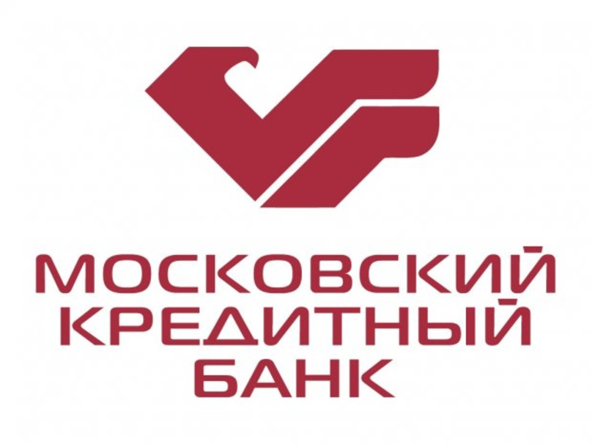

Собственники и руководство
«Аптечная сеть 36,6» является публичной компанией, акции которой торгуются на российских биржевых площадках РТС и ММВБ.Основные акционеры по состоянию на 30 июня 2019 года:
1. Альтус Кэпитал Фармаси Ритейл 1 Лимитед (Altus Capital Pharmacy Retail 1 Limited) — 25,97 %
2. DSM Group — 12,35 %
3. Московский кредитный банк (открытое акционерное общество) — 19,65 %

История создания
Сеть создана в конце 90‑х Сергеем Кривошеевым и Артёмом Бектемировым,
работавшими в фармдистрибьюторской компании «Время».
Они решили применить к пребывавшему тогда в хаотическом состоянии
аптечному рынку технологии современного ритейла (брендинг, продуктовую
матрицу, CTM, открытую выкладку) что в то время казалось революцией.
Для разработки концепции в 2000 году привлекли международную
консалтинговую компанию МcKinsey.
История развития
До 2008 года «36,6» активно скупала региональных игроков и открывала
новые точки. В 2005 были приобретены аптечные сети в Волгограде
(«Добрый сосед»), Дмитрове («Мега-стиль»), Новосибирске
(«Аптечный торговый дом»), Перми («Чаша здоровья»), Самаре («Неболит»),
Санкт-Петербурге («Апельсин» и «Таблетка») и Сарове («Доктор Зеленкин»).
В январе 2006 года завершена сделка по приобретению аптечной сети
«Фармация» («Пермские аптеки») в Пермском крае. Всего в 2006 году
было куплено 18 сетей из 352 аптек и открыто 75 новых точек. В течение
2007 года было приобретено 26 сетей из 293 точек, органически открыто
ещё 166. В июле 2007 года в Нижнем Новгороде открылась тысячная аптека.
На начало 2009 года «36,6» насчитывала 1084 аптеки. В том же году компания начала избавляться от нерентабельных точек. За 2009 год были закрыты 131 аптека, а открыты лишь 23. По состоянию на март 2009 года ОАО «Аптечная сеть 36,6» также контролировало 51,8 % акций фармацевтической компании «Верофарм», входившую в пятёрку крупнейших российских производителей фармацевтических препаратов. «Верофарм» владеет тремя фармацевтическими заводами в Белгороде, Воронеже и Покрове. В конце августа 2013 года акции «Верофарма» были проданы за 5 млрд руб. компании «ГарденХиллс», контролируемой владельцем Московского кредитного банка Романом Авдеевым.
В начале 2010 года было объявлено о том, что 25 % акций компании было продано крупному российскому оптовому торговцу лекарствами компании «СИА интернейшнл». На 1 апреля 2010 года под управлением компании находилось 1004 аптек в 29 регионах РФ, 11 магазинов развивающих игрушек для детей «Центр раннего развития — Early Learning Centre (ELC)», 14 магазинов оптики, а также 21 отдел оптики, расположенных внутри аптек. В 2010 году закрылись 45 аптек и открылись 15.
Глобальный экономический кризис 2012—2013 гг. существенно подорвал позиции компании, финансовые результаты деятельность «36,6» резко ухудшились.
На начало 2009 года «36,6» насчитывала 1084 аптеки. В том же году компания начала избавляться от нерентабельных точек. За 2009 год были закрыты 131 аптека, а открыты лишь 23. По состоянию на март 2009 года ОАО «Аптечная сеть 36,6» также контролировало 51,8 % акций фармацевтической компании «Верофарм», входившую в пятёрку крупнейших российских производителей фармацевтических препаратов. «Верофарм» владеет тремя фармацевтическими заводами в Белгороде, Воронеже и Покрове. В конце августа 2013 года акции «Верофарма» были проданы за 5 млрд руб. компании «ГарденХиллс», контролируемой владельцем Московского кредитного банка Романом Авдеевым.
В начале 2010 года было объявлено о том, что 25 % акций компании было продано крупному российскому оптовому торговцу лекарствами компании «СИА интернейшнл». На 1 апреля 2010 года под управлением компании находилось 1004 аптек в 29 регионах РФ, 11 магазинов развивающих игрушек для детей «Центр раннего развития — Early Learning Centre (ELC)», 14 магазинов оптики, а также 21 отдел оптики, расположенных внутри аптек. В 2010 году закрылись 45 аптек и открылись 15.
Глобальный экономический кризис 2012—2013 гг. существенно подорвал позиции компании, финансовые результаты деятельность «36,6» резко ухудшились.
В настоящее время
По состоянию на январь 2023 года сеть насчитывает более 1800 аптечных
учреждений в десяти регионах страны: Москве, Санкт-Петербурге, Московской,
Новгородской, Тверской, Калужской, Псковской, Воронежской, Ленинградской
областях, а также в Республике Карелии.
Итоги 2022 года: "Общая выручка с НДС выросла на 26,5% за 12 месяцев
2022 года по сравнению с аналогичным периодом прошлого года и составила
67,3 млрд руб. В 2022 года компания показала положительную динамику
показателя EBITDA. Абсолютное значение EBITDA выросло на 3,2 млрд руб.
по сравнению с 2021 годом, а рентабельность увеличилась до 7,1%.
Благодаря росту выручки, а также оптимизации бизнес-процессов компания
зафиксировала положительную чистую прибыль по итогам 2022 года. Выручка
направления интернет-продаж выросла на 170,6% за счет увеличения трафика
на сайтах и мобильном приложении и составила 10,3 млрд руб. с НДС. Доля
онлайн выручки выросла до 15,2% от общей выручки Группы за 2022 год.
Кредитный портфель Группы компаний 36,6 по итогам 2022 года сократился
на 12%.